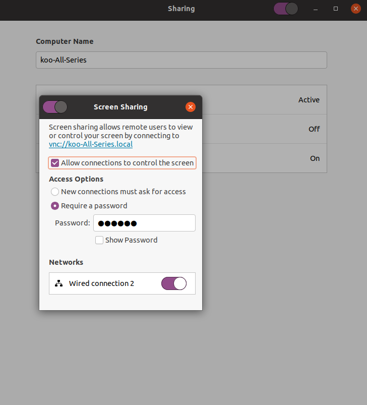

<?xml version="1.0" encoding="UTF-8"?><rss version="2.0"
	xmlns:content="http://purl.org/rss/1.0/modules/content/"
	xmlns:wfw="http://wellformedweb.org/CommentAPI/"
	xmlns:dc="http://purl.org/dc/elements/1.1/"
	xmlns:atom="http://www.w3.org/2005/Atom"
	xmlns:sy="http://purl.org/rss/1.0/modules/syndication/"
	xmlns:slash="http://purl.org/rss/1.0/modules/slash/"
	>

<channel>
	<title>Uncategorized &#8211; Blog</title>
	<atom:link href="index.html" rel="self" type="application/rss+xml" />
	<link>/</link>
	<description>IllusionaryDream</description>
	<lastBuildDate>Tue, 24 Oct 2023 19:19:26 +0000</lastBuildDate>
	<language>en-US</language>
	<sy:updatePeriod>
	hourly	</sy:updatePeriod>
	<sy:updateFrequency>
	1	</sy:updateFrequency>
	<generator>https://wordpress.org/?v=7.0</generator>
	<item>
		<title>Remote Ubuntu Desktop Without Installing</title>
		<link>/index.php/2023/10/24/remote-ubuntu-desktop-without-installing/</link>
					<comments>/index.php/2023/10/24/remote-ubuntu-desktop-without-installing/#respond</comments>
		
		<dc:creator><![CDATA[zg5]]></dc:creator>
		<pubDate>Tue, 24 Oct 2023 19:00:42 +0000</pubDate>
				<category><![CDATA[Uncategorized]]></category>
		<guid isPermaLink="false">https://illusionarydream.com/?p=238</guid>

					<description><![CDATA[Goal: Cofigure personal computer with Ubuntu system to be connected remotely. Configuration in Ubuntu: System version: Ubuntu 20.04.5 LTS Check ip address: Connect to Ubuntu: I am using MacBook Pro. Possible Problems: Incompitible to connect Solution: Suggestion:]]></description>
										<content:encoded><![CDATA[
<h3 class="wp-block-heading">Goal:</h3>


<p class="wp-block-paragraph">Cofigure personal computer with Ubuntu system to be connected remotely.</p>


<h3 class="wp-block-heading">Configuration in Ubuntu:</h3>


<p class="wp-block-paragraph">System version: Ubuntu 20.04.5 LTS</p>


<ul class="wp-block-list">
<li>Open setting -> Sharing</li>


<li>Turn On Sharing button on the top of window</li>


<li>Activate Screen Sharing</li>


<li>Allow connections to control the screen</li>


<li>Configrue a password</li>
</ul>


<figure class="wp-block-image size-full is-resized"></figure>


<p class="wp-block-paragraph">Check ip address:</p>


<ul class="wp-block-list">
<li>Open setting -> Network</li>


<li>Remember the name of Ethernet which you are using.</li>


<li>Open Ternimal: </li>
</ul>


<pre class="wp-block-code"><code>ip a    #enter this command and find the ip address of your computer by Ethernet name</code></pre>


<h3 class="wp-block-heading">Connect to Ubuntu:</h3>


<p class="wp-block-paragraph">I am using MacBook Pro.</p>


<ul class="wp-block-list">
<li>Open Spotlight -> enter vnc://your_ip_address</li>


<li>Click the remote connection software</li>


<li>Enter password you created</li>
</ul>


<p class="wp-block-paragraph"><strong>Possible Problems:</strong> Incompitible to connect</p>


<p class="wp-block-paragraph">Solution:</p>


<pre class="wp-block-code"><code>gsettings set org.gnome.Vino require-encryption false    #configure your ubuntu system with this line</code></pre>


<h3 class="wp-block-heading">Suggestion:</h3>


<ol class="wp-block-list">
<li>If your Ubuntu computer is using campus network and your another PC is using home network, before you connect to remote desktop you should connect to campus network using VPN.</li>
</ol>
]]></content:encoded>
					
					<wfw:commentRss>/index.php/2023/10/24/remote-ubuntu-desktop-without-installing/feed/</wfw:commentRss>
			<slash:comments>0</slash:comments>
		
		
			</item>
	</channel>
</rss>
